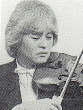
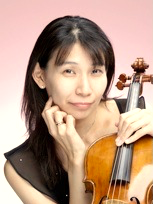

トレーナー

ヴァイオリン 川島秀夫
1954年大阪生まれ。3歳よりヴァイオリンを父・孝敏、ピアノを母・清子より手ほどきを受け、4歳よりヴァイオリンを、叔父故石井純氏に師事する。また、相愛音楽教室にてピアノを習う。京都市立堀川高校音楽科、東京藝術大学音楽学部ヴァイオリン科を経て1978年ヴィエール管弦楽団（現関西フィルハーモニー管弦楽団）入団。堀川高校にて故東儀祐二氏、藝大にて故岩崎洋三氏に師事する。1981年より関西フィルハーモニー管弦楽団初代コンサートマスターに就任、2009年退団。現在、ヴァイオリニスト、大阪市立大学交響楽団、全日本医科学生オーケストラ、宝塚交響楽団等で、トレーナー及び指揮者として活躍。2010年エウフォニカ管弦楽団において指揮者デビューを飾る。

ヴィオラ 臼木麻弥
さいたま市出身。10歳よりヴァイオリンを始め15歳でヴィオラに転向。東京藝術大学音楽学部附属音楽高等学校、東京藝術大学を経て同大学院修士課程を修了。在学中、藝大室内楽定期演奏会や東京藝術大学同声会主催「新卒業生演奏会」等に出演。ヴァイオリンを米原豊、守岡輝、浅井千裕、沢和樹、ヴィオラを故浅妻文樹、川崎和憲、室内楽を故田中千香士、岡山潔、山口裕之の各氏に師事。2002年から2007年まで安田弦楽四重奏団のヴィオラ奏者を務め、現在、Alberi String Quartet、さくら弦楽四重奏団のメンバー。室内楽をはじめ国内オーケストラのゲスト首席奏者を務める等幅広く活動する他、後進の指導にも力を注いでいる。現在、東京シティ・フィルハーモニック管弦楽団首席奏者。
チェロ 荻野健
京都府生まれ。関西大学法学部在学中19歳よりチェロを始め、卒業、その後東京音楽大学を卒業。現在、各地で客演首席、ソロ演奏、エキストラ演奏、指導を行う。体に負担をかけず楽にチェロを弾くために、従来の奏法とは考え方の異なる "荻野テクニック" を開発、提唱し、悩めるチェロ奏者に助言を与える。また、イタリア式弦楽器製作法を習得し、ヴァイオリン、ヴィオラ、チェロの製作も行う世界でも稀なプレイングメーカーでもある。アクエリアスストリングオーケストラ首席奏者。ウインドカンパニー管弦楽団首席奏者。使用楽器はオリジナルモデル "Acero della Verità"（2015年作）、弓 "Bacchetta di Dio"（2016年作）。
コントラバス 吉浦勝喜
元九州交響楽団コントラバス奏者。福岡市生まれ。福岡県立筑紫丘高等学校卒業。東京藝術大学を経て1982年4月九州交響楽団入団、2017年5月同楽団退団。コントラバスを永島義男氏、室内楽を故ルイ・グレラー、海鉾正毅の両氏、指揮を笠原勝二、下野竜也の両氏に師事。藝大在学中、小林道夫氏指導の藝大バッハカンタータクラブに所属、バッハをはじめとするバロック音楽演奏の研鑽を積む。現在、コントラバス演奏の他、各地の市民オーケストラ・大学オーケストラ・吹奏楽団の指揮・指導を行う。九州ベースクラブ会員、ISB（国際コントラバス奏者協会）会員。
木管楽器 和久井仁
オーボエを故似鳥健彦氏に師事し、1989年東京藝術大学入学。同校ではオーボエを小島葉子、小畑善昭の両氏に、また室内楽を故H・ピュイグ・ロジェ、中川良平、山本正治の各氏に師事。同大学を卒業後、東京佼成ウインドオーケストラに入団しオーボエ奏者とアシスタントコンサートマスターを務めた。2001年4月からは愛知県立芸術大学音楽学部の専任講師として勤務した後、2004年4月にNHK交響楽団へ入団し、オーボエ＆イングリッシュホルン奏者を務めている。現在、東京藝術大学、桐朋音楽大学オーケストラアカデミーの非常勤講師。トウキョウ・ミタカ・フィルハーモニアのメンバーも兼任。近年では医科学生オーケストラのOB達によって結成されたオーケストラWや、東京女子医科大学室内楽団を中心にタクトを振っている。東京女子医科大学室内楽団（1995年〜）全日本医科学生オーケストラフェスティバル（1994年〜）西日本医科学生オーケストラフェスティバル（1996年〜）各トレーナーを務めている。

金管楽器 長谷川正規
東京藝術大学を卒業後、同大学大学院音楽研究科修士課程修了。学部在学中に安宅賞を受賞。松尾葉子指揮藝大フィルハーモニア、故岩城宏之指揮オーケストラアンサンブル・金沢とR.V.ウィリアムズのテューバ協奏曲を共演。また、台湾・国家音楽庁にて実践大学吹奏楽団とE.グレグソンのテューバ協奏曲を共演。これまでにテューバを稲川榮一氏に師事。東京藝術大学指揮科教育研究助手、埼玉芸術総合高等学校音楽科非常勤講師などを経て、現在、上越教育大学大学院学校教育研究科准教授。